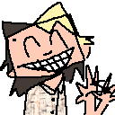

about me

hi!!!!!!!!!!!!!!!!!
online i go by freefilesvirus because i think thats funny, but in real life my friends call me clancy because i think thats serious
i like using a hyphen as a nose in emoticons :-)
only a spot of my hair is blonde anymore but soon a friend will make it all blonde again...
i use a lot of elipses and single words capitalized for emphasis.... something about it is so FUNNY to me.... so youll probably see a lot of that here or if we talk online
the craziest thing though is hardly anyone else talks like that, right? it seems pretty distinct. but one of my friends has a store and in the changing room theres a piece of paper that people can write on and someone wrote "my nipple IS bruised". wtf!!!!! its not my handwriting at all but he is certain that I wrote that!!!!!!! i didnt!!!!!!!
if youre ever in columbia missouri go see for yourself in the changing room of gruesome ghoul. and if you do see this and go there please write "my nipple IS bruised" on the board lol
my consistent hobbies are programming and drawing, then less so 3d, then even less making music. but that ones catching up
my mission is to have a good time making video games then publish them for free
online i go by freefilesvirus because i think thats funny, but in real life my friends call me clancy because i think thats serious
i like using a hyphen as a nose in emoticons :-)
only a spot of my hair is blonde anymore but soon a friend will make it all blonde again...
i use a lot of elipses and single words capitalized for emphasis.... something about it is so FUNNY to me.... so youll probably see a lot of that here or if we talk online
the craziest thing though is hardly anyone else talks like that, right? it seems pretty distinct. but one of my friends has a store and in the changing room theres a piece of paper that people can write on and someone wrote "my nipple IS bruised". wtf!!!!! its not my handwriting at all but he is certain that I wrote that!!!!!!! i didnt!!!!!!!
if youre ever in columbia missouri go see for yourself in the changing room of gruesome ghoul. and if you do see this and go there please write "my nipple IS bruised" on the board lol
my consistent hobbies are programming and drawing, then less so 3d, then even less making music. but that ones catching up
my mission is to have a good time making video games then publish them for free